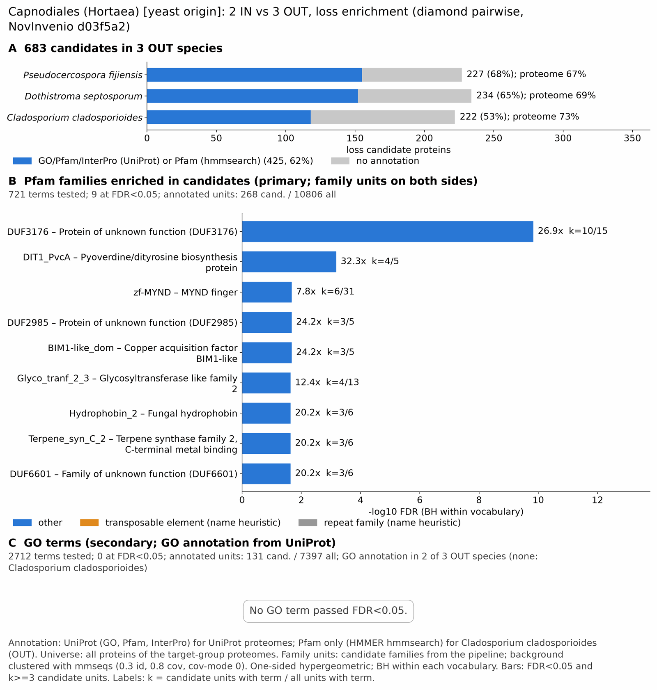

yc capnodiales: functional enrichment (loss)
One-sided hypergeometric test per term; Benjamini-Hochberg FDR within each scope, level and vocabulary. Candidates are the loss candidates: gene families present in the OUT group and absent from the IN group. Universe: proteome. Background clustered: True (37122 sequences in 21207 clusters, mmseqs easy-cluster --min-seq-id 0.3 -c 0.8). Family level: one unit per candidate family and per background cluster.
Sources: Pfam: 2026-01-27-Pfam38.2; InterPro entries: 110.0; GO: releases/2026-07-26; analysis generated 2026-10-24T14:37:02. Source tables: /bigdata/stajichlab/jstajich/projects/NovInvenio_Investigations/studies/fungi/yeast_convergence/yc_capnodiales/analysis/enrichment/outputs/loss/proteome_clustered.
Full record: PROVENANCE. Run report: report.html.
Related: yeast_convergence: comparison across contrasts
- Annotation provenance is not fully recorded: PROVENANCE.yaml lists the per-species annotation files and their checksums, but not the UniProt release they come from.
- GO results are secondary. GO annotations include computational evidence (IEA, IBA); the GO evidence column shows if a term has non-IEA support.
- Candidate families (pipeline clustering of candidates) and background clusters (mmseqs clustering of the background proteome) are made by different runs, so family-level counts are not fully comparable.
- Low annotation: the candidate set has less than 50% annotation for InterPro 43.8%, GO 23.9%. Enrichment for these vocabularies has low power.
- GO and InterPro cover only 2 of 3 species: Pseufiji, Dothsept. No GO and InterPro annotation for Cladclad; this species adds no units to the GO and InterPro tests, so those results describe the covered species only.
Summary figure

Annotation coverage
Fraction of proteins with at least one term per vocabulary. Universe = all proteins of the species; candidates = the candidate set.
| Species | Set | Proteins | Pfam | Pfam clan | InterPro | GO | Any |
|---|---|---|---|---|---|---|---|
| Pseufiji | universe | 13043 | 61.8% | 50.1% | 66.8% | 53.4% | 67.1% |
| Pseufiji | candidates | 227 | 52.4% | 40.5% | 67.0% | 34.8% | 68.3% |
| Dothsept | universe | 12399 | 63.6% | 51.7% | 69.2% | 55.1% | 69.5% |
| Dothsept | candidates | 234 | 52.1% | 41.0% | 62.8% | 35.9% | 65.0% |
| Cladclad | universe | 12363 | 73.3% | 61.2% | 0.0% | 0.0% | 73.3% |
| Cladclad | candidates | 222 | 53.1% | 43.2% | 0.0% | 0.0% | 53.1% |
| ALL_OUT | universe | 37805 | 66.1% | 54.3% | 45.7% | 36.5% | 69.9% |
| ALL_OUT | candidates | 683 | 52.6% | 41.6% | 43.8% | 23.9% | 62.2% |
Tests summary
Per vocabulary: terms with FDR < 0.05 / terms tested. Protein level counts proteins; family level counts candidate families and background clusters.
| Scope | Level | Cand. units | Pfam sig / tested | Pfam clan sig / tested | InterPro sig / tested | GO sig / tested |
|---|---|---|---|---|---|---|
| whole_set | family | 532 | 9 / 721 | 2 / 292 | 1 / 1132 | 0 / 2712 |
| whole_set | protein | 683 | 29 / 1666 | 9 / 413 | 8 / 2135 | 0 / 3751 |
| Cladclad | family | 206 | 6 / 512 | 0 / 253 | 0 / 0 (not_available_no_annotated_units) | 0 / 0 (not_available_no_annotated_units) |
| Cladclad | protein | 222 | 8 / 630 | 0 / 265 | 0 / 0 (not_available_no_annotated_units) | 0 / 0 (not_available_no_annotated_units) |
| Dothsept | family | 230 | 0 / 340 | 0 / 239 | 0 / 856 | 0 / 2479 |
| Dothsept | protein | 234 | 1 / 420 | 0 / 249 | 4 / 1039 | 0 / 2640 |
| Pseufiji | family | 220 | 2 / 346 | 2 / 244 | 2 / 836 | 0 / 2474 |
| Pseufiji | protein | 227 | 3 / 432 | 2 / 259 | 4 / 1047 | 0 / 2656 |
Top 25 Pfam terms (whole set, family level)
25 rows shown, ordered by FDR then p-value; 9 have FDR < 0.05 (bold).
| Term | Name | k / N cand. | n / M bg | Fold | FDR (BH) |
|---|---|---|---|---|---|
| PF11374 | DUF3176: Protein of unknown function (DUF3176) | 10 / 268 | 15 / 10806 | 26.881 | 1.45e-10 |
| PF05141 | DIT1_PvcA: Pyoverdine/dityrosine biosynthesis protein | 4 / 268 | 5 / 10806 | 32.257 | 6.54e-04 |
| PF01753 | zf-MYND: MYND finger | 6 / 268 | 31 / 10806 | 7.804 | 0.021 |
| PF11204 | DUF2985: Protein of unknown function (DUF2985) | 3 / 268 | 5 / 10806 | 24.193 | 0.021 |
| PF20238 | BIM1-like_dom: Copper acquisition factor BIM1-like | 3 / 268 | 5 / 10806 | 24.193 | 0.021 |
| PF13641 | Glyco_tranf_2_3: Glycosyltransferase like family 2 | 4 / 268 | 13 / 10806 | 12.406 | 0.023 |
| PF06766 | Hydrophobin_2: Fungal hydrophobin | 3 / 268 | 6 / 10806 | 20.16 | 0.023 |
| PF19086 | Terpene_syn_C_2: Terpene synthase family 2, C-terminal metal binding | 3 / 268 | 6 / 10806 | 20.16 | 0.023 |
| PF20246 | DUF6601: Family of unknown function (DUF6601) | 3 / 268 | 6 / 10806 | 20.16 | 0.023 |
| PF11915 | DUF3433: Protein of unknown function (DUF3433) | 3 / 268 | 8 / 10806 | 15.12 | 0.056 |
| PF27522 | YDMC: Oxidoreductase/YMDC permease-like domain | 4 / 268 | 18 / 10806 | 8.96 | 0.056 |
| PF07110 | EthD: EthD domain | 3 / 268 | 10 / 10806 | 12.096 | 0.088 |
| PF22664 | TRI-like_N: Trichothecene 3-O-acetyltransferase-like N-terminal domain | 3 / 268 | 10 / 10806 | 12.096 | 0.088 |
| PF11807 | UstYa: Mycotoxin biosynthesis protein UstYa | 6 / 268 | 52 / 10806 | 4.652 | 0.089 |
| PF13632 | Glyco_trans_2_3: Glycosyl transferase family group 2 | 3 / 268 | 11 / 10806 | 10.997 | 0.103 |
| PF01476 | LysM: LysM domain | 3 / 268 | 13 / 10806 | 9.305 | 0.162 |
| PF02458 | Transferase: Transferase family | 3 / 268 | 15 / 10806 | 8.064 | 0.200 |
| PF00296 | Bac_luciferase: Luciferase-like monooxygenase | 2 / 268 | 5 / 10806 | 16.128 | 0.200 |
| PF01180 | DHO_dh: Dihydroorotate dehydrogenase | 2 / 268 | 5 / 10806 | 16.128 | 0.200 |
| PF13506 | Glyco_transf_21: Glycosyl transferase family 21 | 2 / 268 | 5 / 10806 | 16.128 | 0.200 |
| PF25539 | Bestrophin_2: Bacterial/Fungal Bestrophin protein | 2 / 268 | 5 / 10806 | 16.128 | 0.200 |
| PF00535 | Glycos_transf_2: Glycosyl transferase family 2 | 2 / 268 | 6 / 10806 | 13.44 | 0.259 |
| PF01504 | PIP5K: Phosphatidylinositol-4-phosphate 5-Kinase | 2 / 268 | 6 / 10806 | 13.44 | 0.259 |
| PF08493 | AflR: Aflatoxin regulatory protein | 2 / 268 | 6 / 10806 | 13.44 | 0.259 |
| PF11578 | DUF3237: Protein of unknown function (DUF3237) | 2 / 268 | 7 / 10806 | 11.52 | 0.342 |
Top 25 InterPro terms (whole set, family level)
25 rows shown, ordered by FDR then p-value; 1 have FDR < 0.05 (bold).
| Term | Name | k / N cand. | n / M bg | Fold | FDR (BH) |
|---|---|---|---|---|---|
| IPR021514 | Family:Protein of unknown function DUF3176 | 6 / 245 | 9 / 9792 | 26.645 | 2.06e-05 |
| IPR011008 | Homologous_superfamily:Dimeric alpha-beta barrel | 6 / 245 | 31 / 9792 | 7.736 | 0.057 |
| IPR008949 | Homologous_superfamily:Isoprenoid synthase domain superfamily | 4 / 245 | 14 / 9792 | 11.419 | 0.119 |
| IPR002893 | Domain:Zinc finger, MYND-type | 4 / 245 | 15 / 9792 | 10.658 | 0.119 |
| IPR044053 | Family:Hydroxylase/desaturase AsaB-like | 4 / 245 | 16 / 9792 | 9.992 | 0.124 |
| IPR009799 | Domain:EthD domain | 3 / 245 | 9 / 9792 | 13.322 | 0.219 |
| IPR036047 | Homologous_superfamily:F-box-like domain superfamily | 9 / 245 | 113 / 9792 | 3.183 | 0.264 |
| IPR018392 | Domain:LysM domain | 3 / 245 | 11 / 9792 | 10.9 | 0.264 |
| IPR036779 | Homologous_superfamily:LysM domain superfamily | 3 / 245 | 11 / 9792 | 10.9 | 0.264 |
| IPR011042 | Homologous_superfamily:Six-bladed beta-propeller, TolB-like | 4 / 245 | 23 / 9792 | 6.951 | 0.264 |
| IPR051059 | Family:Transcription factor verF-like | 3 / 245 | 12 / 9792 | 9.992 | 0.272 |
| IPR053157 | Family:Sterol regulatory element-binding protein Upc2/Ecm22 | 3 / 245 | 12 / 9792 | 9.992 | 0.272 |
| IPR021765 | Family:Mycotoxin biosynthesis protein UstYa-like | 5 / 245 | 44 / 9792 | 4.542 | 0.373 |
| IPR056632 | Domain:Domain of unknown function DUF7730 | 4 / 245 | 29 / 9792 | 5.513 | 0.373 |
| IPR002498 | Domain:Phosphatidylinositol-4-phosphate 4/5-kinase, core | 2 / 245 | 5 / 9792 | 15.987 | 0.373 |
| IPR016164 | Homologous_superfamily:FAD-linked oxidase-like, C-terminal | 2 / 245 | 5 / 9792 | 15.987 | 0.373 |
| IPR021840 | Family:Protein of unknown function DUF3433 | 2 / 245 | 5 / 9792 | 15.987 | 0.373 |
| IPR027484 | Homologous_superfamily:Phosphatidylinositol-4-phosphate 5-kinase, N-terminal | 2 / 245 | 5 / 9792 | 15.987 | 0.373 |
| IPR002523 | Family:Mg2+ transporter protein, CorA-like/Zinc transport protein ZntB | 3 / 245 | 16 / 9792 | 7.494 | 0.406 |
| IPR045863 | Homologous_superfamily:CorA, transmembrane region | 3 / 245 | 17 / 9792 | 7.053 | 0.450 |
| IPR041622 | Domain:SMODS and SLOG-associating 2TM effector domain, fungi | 2 / 245 | 6 / 9792 | 13.322 | 0.450 |
| IPR050425 | Family:NAD(P)-dependent dehydratase-like | 2 / 245 | 6 / 9792 | 13.322 | 0.450 |
| IPR008030 | Domain:NmrA-like domain | 3 / 245 | 19 / 9792 | 6.311 | 0.549 |
| IPR038883 | Family:Uncharacterized protein AN11006-like | 8 / 245 | 129 / 9792 | 2.479 | 0.716 |
| IPR044862 | Domain:Prolyl 4-hydroxylase alpha subunit, Fe(2+) 2OG dioxygenase domain | 2 / 245 | 8 / 9792 | 9.992 | 0.716 |
Top 15 GO terms (whole set, family level) — secondary, computational evidence (IEA/IBA) included
15 rows shown, ordered by FDR then p-value; 0 have FDR < 0.05 (bold).
| Term | Name | k / N cand. | n / M bg | Fold | FDR (BH) | GO evidence | Families with non-IEA |
|---|---|---|---|---|---|---|---|
| GO:0016838 | molecular_function:carbon-oxygen lyase activity, acting on phosphates | 3 / 131 | 8 / 7397 | 21.175 | 0.212 | IEA_only | 0 |
| GO:0043385 | biological_process:mycotoxin metabolic process | 6 / 131 | 53 / 7397 | 6.392 | 0.212 | IEA_only | 0 |
| GO:0043386 | biological_process:mycotoxin biosynthetic process | 6 / 131 | 53 / 7397 | 6.392 | 0.212 | IEA_only | 0 |
| GO:0009403 | biological_process:toxin biosynthetic process | 6 / 131 | 55 / 7397 | 6.16 | 0.212 | IEA_only | 0 |
| GO:0009404 | biological_process:toxin metabolic process | 6 / 131 | 55 / 7397 | 6.16 | 0.212 | IEA_only | 0 |
| GO:0000981 | molecular_function:DNA-binding transcription factor activity, RNA polymerase II-specific | 15 / 131 | 339 / 7397 | 2.498 | 0.413 | IEA_only | 0 |
| GO:0016491 | molecular_function:oxidoreductase activity | 25 / 131 | 740 / 7397 | 1.908 | 0.419 | IEA_only | 0 |
| GO:0004458 | molecular_function:D-lactate dehydrogenase (cytochrome) activity | 2 / 131 | 5 / 7397 | 22.586 | 0.679 | IEA_only | 0 |
| GO:0006089 | biological_process:lactate metabolic process | 2 / 131 | 5 / 7397 | 22.586 | 0.679 | IEA_only | 0 |
| GO:0016805 | molecular_function:dipeptidase activity | 2 / 131 | 5 / 7397 | 22.586 | 0.679 | IEA_only | 0 |
| GO:0033719 | molecular_function:(2R)-oxo-acid reductase activity | 2 / 131 | 5 / 7397 | 22.586 | 0.679 | IEA_only | 0 |
| GO:0047809 | molecular_function:D-lactate dehydrogenase activity | 2 / 131 | 5 / 7397 | 22.586 | 0.679 | IEA_only | 0 |
| GO:0003700 | molecular_function:DNA-binding transcription factor activity | 15 / 131 | 387 / 7397 | 2.189 | 0.702 | IEA_only | 0 |
| GO:0004457 | molecular_function:lactate dehydrogenase activity | 2 / 131 | 6 / 7397 | 18.822 | 0.806 | IEA_only | 0 |
| GO:0016898 | molecular_function:oxidoreductase activity, acting on the CH-OH group of donors, cytochrome as acceptor | 2 / 131 | 6 / 7397 | 18.822 | 0.806 | IEA_only | 0 |
Actin cytoskeleton controls
Known actin-related families and how many of their proteins pass each filter. Protein ID columns are left out.
| control | pfam_ids | desc_regex | OUT_universe | OUT_in_matrix | OUT_pass_outgroup_rule | candidates | near_miss_in1 | near_miss_in2 | n_Pseufiji | n_Dothsept | n_Cladclad | n_Hortwern | n_Hortthai |
|---|---|---|---|---|---|---|---|---|---|---|---|---|---|
| Arp2/3 ARPC2 (P34-Arc) | PF04045 | 3 | 3 | 3 | 0 | 0 | 3 | 1 | 1 | 1 | 2 | 1 | |
| Arp2/3 ARPC3 (P21-Arc) | PF04062 | 3 | 3 | 3 | 0 | 0 | 3 | 1 | 1 | 1 | 2 | 1 | |
| Arp2/3 ARPC4 | PF05856 | 3 | 3 | 3 | 0 | 0 | 3 | 1 | 1 | 1 | 2 | 1 | |
| Arp2/3 ARPC5 (P16-Arc) | PF04699 | 3 | 3 | 3 | 0 | 0 | 3 | 1 | 1 | 1 | 1 | 1 | |
| Arp2/3 ARPC1 (description only) | arp2/3 complex.*(41|p41|subunit 1)|ARPC1 | 0 | 0 | 0 | 0 | 0 | 0 | 0 | 0 | 0 | 0 | 0 | |
| Arp2 / Arp3 (description only) | actin-related protein (2|3)\b|\bARP[23]\b | 12 | 12 | 12 | 0 | 0 | 12 | 6 | 6 | 0 | 13 | 7 | |
| WAVE complex NCKAP1 | PF09735 | 0 | 0 | 0 | 0 | 0 | 0 | 0 | 0 | 0 | 0 | 0 | |
| WAVE complex CYFIP (FragX_IP) | PF05994 | 0 | 0 | 0 | 0 | 0 | 0 | 0 | 0 | 0 | 0 | 0 | |
| WAVE complex ABI | PF07815|PF27594 | 0 | 0 | 0 | 0 | 0 | 0 | 0 | 0 | 0 | 0 | 0 | |
| SCAR/WAVE (SCAR_helical) | PF27569 | 0 | 0 | 0 | 0 | 0 | 0 | 0 | 0 | 0 | 0 | 0 | |
| WASP family (WH1) | PF00568 | 3 | 3 | 3 | 0 | 0 | 3 | 1 | 1 | 1 | 2 | 1 | |
| WH2 motif (WASP, WAVE, others) | PF02205 | 9 | 9 | 9 | 0 | 0 | 9 | 3 | 3 | 3 | 5 | 3 | |
| Formin FH2 | PF02181 | 3 | 3 | 3 | 0 | 0 | 3 | 1 | 1 | 1 | 2 | 1 | |
| Formin Drf_GBD / Drf_FH3 / Drf_DAD | PF06371|PF06367|PF06345 | 5 | 5 | 5 | 0 | 0 | 5 | 2 | 2 | 1 | 4 | 2 | |
| Ena/VASP (VASP_tetra) | PF08776 | 0 | 0 | 0 | 0 | 0 | 0 | 0 | 0 | 0 | 0 | 0 | |
| Coronin (description only) | coronin | 2 | 2 | 2 | 0 | 0 | 2 | 1 | 1 | 0 | 2 | 1 | |
| Cortactin (HS1_rep) | PF02218 | 0 | 0 | 0 | 0 | 0 | 0 | 0 | 0 | 0 | 0 | 0 | |
| Myosin 2 tail (Myosin_tail_1) | PF01576 | 0 | 0 | 0 | 0 | 0 | 0 | 0 | 0 | 0 | 0 | 0 | |
| Myosin head (all myosins) | PF00063 | 15 | 15 | 15 | 0 | 0 | 15 | 5 | 5 | 5 | 10 | 4 |
Page written by bin/generate_enrichment_page.py.